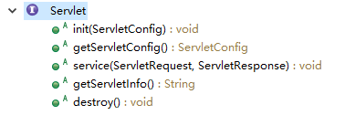

1.doGet()和doPost()区别/get和post请求方法区别：
（1）在form表单中：method = “get/post”相对应doGet和doPost方法。
（2）在http协议中：相对应http的GET和POST请求方法（http的请求方法有：GET,POST,PUT,HEAD,DELETE,OPTIONS,TRACE,CONNECT,PATCH）
（3）get方法提交数据有大小的限制为1024字节左右，但是post方法没有数据大小的显示。
（4）使用get方法会将form表单提交的数据存放在url中（以key-value形式），用户看得见；
， 但post方法将数据存放在http协议的请求体中，用户看不见。
因此get方式的安全性差，post方法的安全性更高。
（5）服务器获取数据：get方法中采用request.QueryString获取；post方法request.Form获取
服务器随机接受get方法的数据，而post方法服务器先接受数据信息的长度，再接受数据。
（6）在数据查询的时候，建议使用get方式，而数据添加，修改，删除时，建议使用post方式。
2.servlet的生命周期：

声明：servlet接口只有上图这些方法，而doGet和doPost方法在类HttpServlet中，在eclipse中创建一个servlet类，这个类就继承了HttpServlet类。
web容器加载servlet，生命周期开始。通过调用servlet的init()方法进行servlet初始化。通过调用service()方法实现（客户端发送的请求都是交给service方法），
根据请求的不同调用不同的do**()方法。结束service()方法后，web容器调用destroy()方法，销毁。
3.Cookie和Session：
http是一种无状态的协议，客户端和服务器端建立连接并传输数据，数据传输完成后，连接断开，当再次需要交互数据时，需要建立新的连接，
因此，服务器无法从连接上跟踪会话也不知道用户上次做了什么。
（1）Cookie的原理：
Cookie是解决http无状态协议的有效方式（本质），服务器可以设置或读取cookie所包含的信息。
Cookie是通过set-cookie响应头和cookie请求头将会话中产生的数据保存在客户端的技术。
客户端发送请求给服务器端，服务器端将获取到的数据通过set-cookie响应头发送给浏览器，浏览器将cookie以文件的形式保存在浏览器内部，
当客户端再次发送请求的时候，服务器可以通过cookie请求头获取上次发送给浏览器的cookie心意，通过这种方式保存会话中产生的数据。
（2）session原理：
session也是解决http协议无状态（不能维持现状）的问题。
session产生于服务器端，以对象的形式保存在服务器端。服务器端每产生一个新的session对象都会分配一个唯一的id，
并且这个id值将以cookie的形式保存在客户端，cookie的键就是jsessionid，将cookie值放在浏览器，当客户端再次发送请求的时候，
将携带cookie信息到浏览器，服务器通过该cookie就可以根据jsessionid的值得知当前会话保存的session。
关闭浏览器，便获取不到上次保存的session，并不是因为session被销毁了（session销毁的原因是因为在一定的时间内没有被操作，才会被销毁），
而是因为丢失了sessionid（sessionid默认在浏览器关闭的时候销毁）。
（3）session和cookie的区别：
a.cookie数据存放在客户端，session存放在服务器端
cookie不安全（别人可以分析存放在本地的cookie进行cookie欺骗）
session在一定时间内保存在服务器上，当访问增多是，比较占用服务器的性能
b.用户可以设置cookie功能禁用，但是session不能。
c.cookie只能设置存储文本类型，session中能存取object值。
d.cookie有大小限制以及浏览器存放的cookie个数也有限制（各个浏览器的限制是不一样的），而session没有大小限制。
（4）相同点（理解）：
a.都是在服务器端产生。
b.都是解决http协议无状态问题。
c.都是key-value形式保存。
d.都是跟踪会话。
以上三个问题都被面试管问过，尤其是第三个，被问多次。
4.jsp和servlet的区别：
jsp是servlet技术的扩展，本质上是servlet的简易方式，更强调外观上的表达。
主要的不同点在于，servlet的应用逻辑在java文件中，并且完全从表示层中的html里分离出来。jsp是java和HTML组合而成。
jsp注重视图，servlet注重控制逻辑。